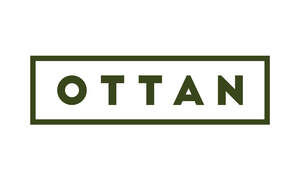

Trade Mark Journal No.2025/044 31 October 2025
UK00004281971 22 October 2025 (1,17,19,20,35,40,42,45)

- Class 1
- Bio-based composite compounds and chemical preparations derived from recycled agricultural, food or industrial by-products; unprocessed resins and binding agents for use in the manufacture of composite panels and surfaces; chemical additives for improving the mechanical, thermal or physical performance of composite materials; industrial adhesives.
- Class 17
- Semi-processed or processed bio-based materials in the form of sheets, panels, blocks, pellets or specially shaped pieces for use in manufacturing; composite resins, fillers and polymer blends for industrial use; laminated or mouldable thermoset or thermoplastic composite materials for furniture, automotive or interior applications; sound- or heat-insulating materials made from upcycled or recycled bio-based waste.
- Class 19
- Building and decorative materials, namely wall, ceiling and surface panels made of bio-based composites; rigid boards, cladding, tiles and coverings for interior design or architectural use; decorative or structural surfaces and coatings for construction purposes.
- Class 20
- Furniture and furniture components made of bio-based composite materials; worktops, tables, shelving and decorative items formed from recycled or waste-based materials; interior fittings and modular elements for furniture or product design.
- Class 35
- Wholesale, retail and online sales services relating to bio-based composite materials, decorative panels and sustainable design products; business development, marketing and promotional services relating to environmentally responsible materials and technologies.
- Class 40
- Treatment and processing of materials; custom formulation, mixing and moulding of bio-based composite compounds; surface finishing, coating and laminating services; recycling and upcycling of waste materials for use in the manufacture of new products.
- Class 42
- Scientific and industrial research and development in the field of bio-based materials and sustainable manufacturing; industrial and product design relating to composite materials; testing, analysis and material characterisation of composite formulations; technical consultancy relating to the identification, sourcing and evaluation of bio-based waste materials for use in manufacturing; advisory services relating to material innovation, recycling technologies and life-cycle assessment.
- Class 45
- Licensing of intellectual property rights, material formulations and manufacturing know-how; consultancy relating to the licensing, commercial exploitation and protection of intellectual and industrial property rights.
Ottan Ltd